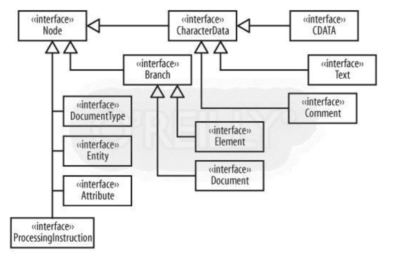

2.1 主要外部接口
Everything is a node, 这是Dom4j的接口继承关系图中表现出来的第一大特点。 包括Document, Element在内的众多接口，都是我们在解析XML时极常用到的。 节点这一概念，在第一章中已经交代过了，这里不再赘述。 但Node这一底层接口是用户完全没必要接触的，也就是说，就算你刚入门XML，也不需要了解内部的树接口，就可以对XML文档进行操作了。
从下面的UML图中，我们还可以发现两个中间的接口，即Branch和CharacterData,它们分别对可存在孩子的节点和不存在孩子的叶节点做了相应的特殊接口。 Dom4j主要外部接口的设计体现了面向对象设计原则中的接口隔离，即尽可能地细化接口，而不是创建一个庞大而臃肿的Node接口提供所有依赖于它的类进行调用。
